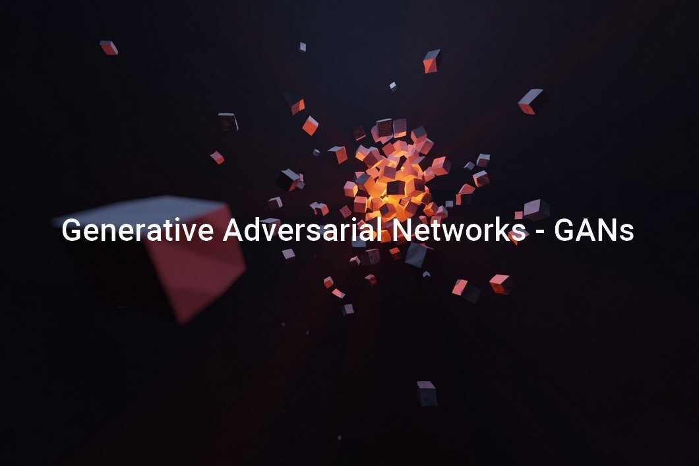

Publications and Projects
Publications (In Progress)
-
Self-Improving Instructions and Programs for Visual Concept Learning using LLMs at a Human Level
Ayush Sharma, Yuke Zhang, Madeleine Udell, Iddo Drori, In progress -
Solving Harvard's Mathematics PhD Quals and MIT's EECS Curriculum using LLMs at a Human Level
Iddo Drori, Danielle Drori, Cindy Zhang, Ryan Nie, Chunhao Bi, Ayush Sharma, Uday Garg, Shreyas Sudarsan, Seunghwan Hyun, Bargav Jagatha, Akshat Gurbaxani, Abhaya Shukla, Nicholas Belsten, Ori Kerret, Avi Shporer, Madeleine Udell, In progress
YouTube Assistant
Tech Used: LangChain, Google Gemini 1.5 Flash LLM, MLOps, Sentence Transformer, FAISS, Gradio, Hugging Face
Description of the project:
- An End to End Deployed AI Application!
- It is an assistant that answers all queries about a YouTube video, saving users from watching the entire video just to find a specific piece of information. This saves users time by providing clarity about the video’s content before they watch it in full. Additionally, users can determine in advance if the video contains the specific information they are seeking.
- This assistant uses LangChain and Gemini 1.5 Flash model in the backend and uses Meta’s FAISS (Facebook AI Similarity Search) for document similarity search.
- The frontend (to input the user query and video link, and output the result) is created using Gradio and the website is deployed on Hugging Face.
Photo-realistic Video Generation using Diffusion Models
Tech Used: Text to Image Diffusion Models, DDIM and DPM Samplers, Image Generation, Generative AI
Description of the project:
- A research project which aims to improve the state-of-the-art zero-shot text-guided video-to-video framework 'Rerender A Video'.
- We implemented modifications to the original paper’s methods for key frame sampling and frame selection.
- While the original authors used Uniform Key Frame Selection, we implemented Non-Uniform Key Frame Selection using various methods such as ORB Feature Points Matching, Optical Flow Change Calculation, and ResNet-Based Feature Extraction.
- Additionally, we used the DPM solver as a sampler, unlike the original authors who used the DDIM sampler.
Debt Collection project for client "WGBH" (Team Lead)
Tech Used: Data Science and Analysis, SQL, Python, Pandas, Matplotlib
Description of the project:
- A Data Science Project, led by me, for the Public Radio and Television Station of Boston, “WGBH,” in Collaboration with Boston University.
- We examined 5,000+ debt collection cases (from Massachusetts Court System Database) over 10 years for the client "WGBH", identifying a 20% rise in debt case filings and a 25% increase in virtual proceedings during pandemic (2020-2021), and other important insights like 40% capias warrants, 30% wage garnishments, top 10 debt collectors and companies, etc.
- I led a team of 4 students in this project.

Image Generation using Generative Adversarial Networks
Tech Used: Data Science and Analysis, SQL, Python, Pandas, Matplotlib
Description of the project:
- This research project aims to explore various types of GANs.
- I Developed various models like basic GAN and BigGAN to generate dog images using the standard Stanford Dog Dataset.
- I employed Self Attention and other architectural changes in these models to overcome issues like Mode Collapse, Artifacts problem, etc.